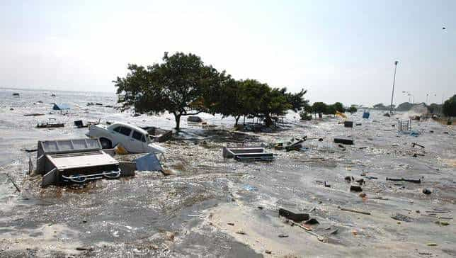
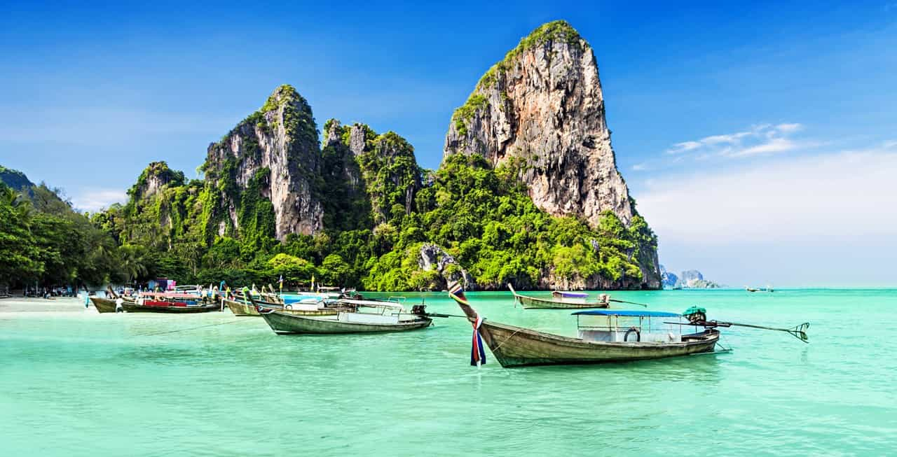
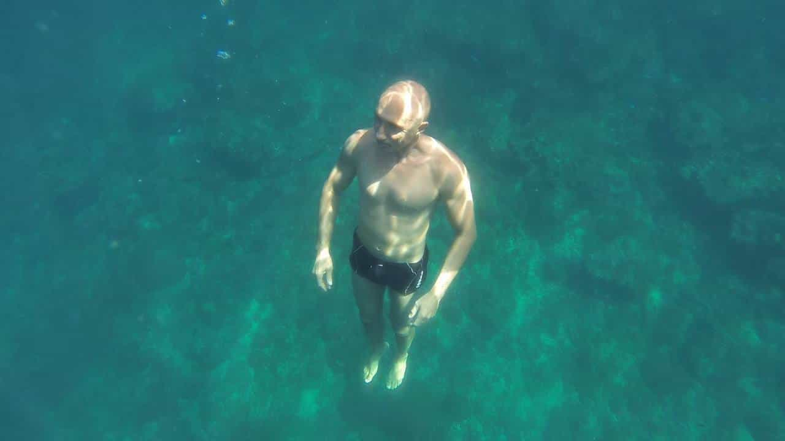
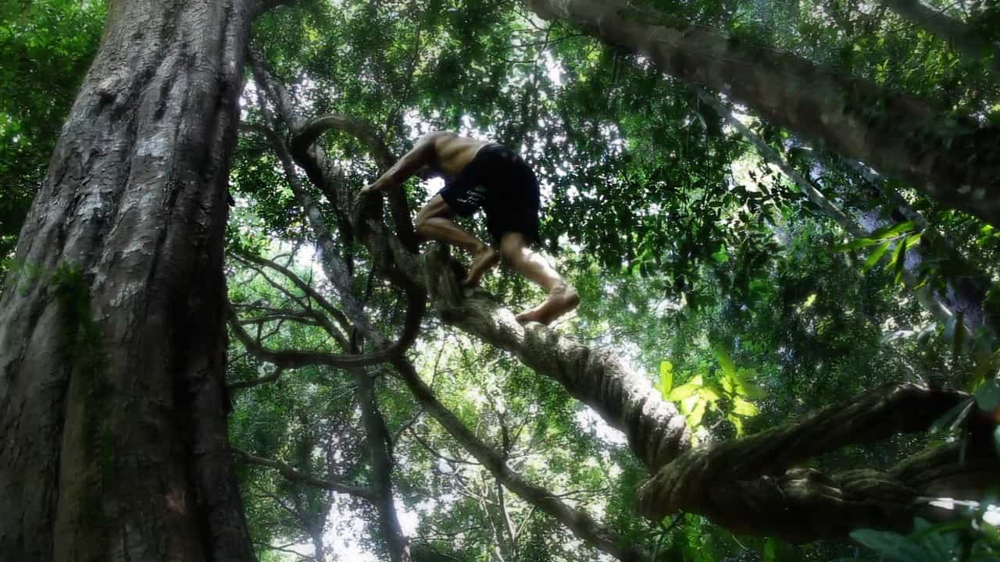
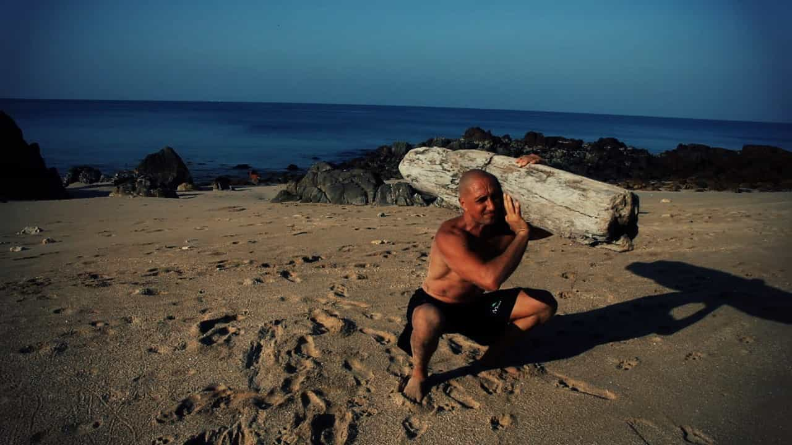
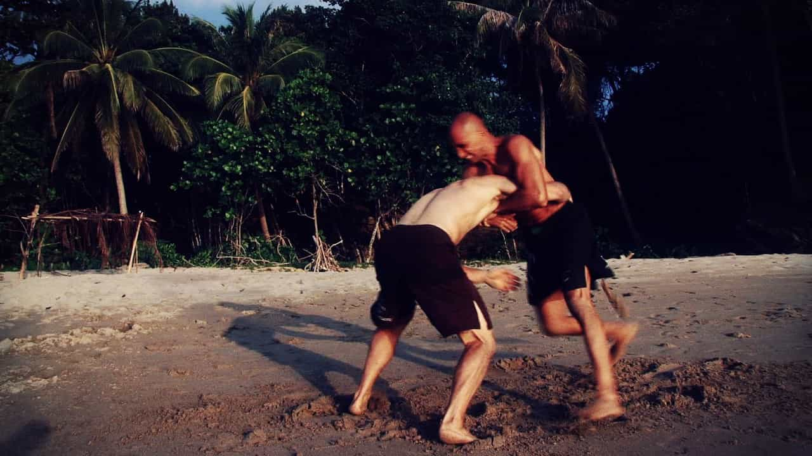

It is 7:30am on the day after Christmas in 2004. The sun is already up in the blue sky of the Andaman sea, and some rare tourists are walking on the main beach of Phi Phi island in Thailand. Most of the tourists are still sleeping, dealing with the usual hangover that comes with the traditional Christmas party.
The locals are busy preparing the long tail boats they use to cruise around the nearby islands. Some Westerners like me, who live here, fill and carry the diving tanks the scuba divers will use to explore the underwater reefs today.
In less than an hour, this idyllic landscape will turn into a dramatic nightmare and many of those people will die, crushed and drowned by the powerful wave of a tsunami coming from the Indian Ocean.

Was there a way to prevent that? Not more than preventing a hurricane in Florida or an earthquake in California. Scientists can predict it, multi-million dollar sensors can detect it, information networks can announce it through various media, but there is no way to prevent it from happening. But we can be more prepared than when I experienced this tsunami in Thailand. Governments and local administrations can invest in infrastructures to mitigate the potential risks and better inform the general public.
And individuals can be better prepared to deal with the consequences of natural events. The people who tragically died on this island were not different from any other people on this planet. As a matter of fact, a vast majority of them were young and relatively fit. They didn’t survive for only a handful of reasons, mainly:
- lack of situational awareness
- lack of appropriate mindset
- lack of physical skills
The situational awareness and appropriate mindset are mainly due to the fact that, when we are on vacation on a tropical island, the last thing we want to think about is the remote possibility of a tragic event of any kind. If the place is nice and sunny, if the locals are friendly and smiling, we quickly feel safe and let our guard down. No pickpockets, no fire, no mugging, no earthquake, no car crash, and therefore no need to pay attention to any precursor sign, no need to keep our valuables and documents with us at all times, no need to have a look at evacuation routes, fire exits, etc. In other words we quickly become complacent when everything looks like paradise.

But this lack of situational awareness and appropriate mindset was only one side of the coin for the many fatalities that occurred that day in Thailand. One of the main culprits was the lack of physical skills. Many people didn’t survive simply because they didn’t have the physical abilities to deal with what happened to them and around them.
Some were not comfortable in the water and couldn’t swim across the strong current that the wave and the obstacles created. The event only lasted a few minutes but the water raised quickly and submerged the lowest part of the island.
Some were not able to hold their breath for a few seconds. When the wave hit the hotels and guesthouses near the beach, most of the rooms were submerged very rapidly, but not for very long. Surprise and panic killed a lot of people in their rooms.

Some were not able to hold on to fixed objects for more than a few seconds. The current was strong and being able to hold on something, or even better to climb onto something, was a good way to increase the chance of surviving.
Some were not able to run away and climb a hill or a stairway. For those who were on the beach and saw the wave coming, the proper action was to sprint and find high ground. Reaching the highest floor of a hotel or one of the nearby hills was a good way to avoid the full force of the tsunami.
Some were not able to push away heavy objects. Entrapment was one of the major risks in this event. Many people drowned because they lacked the necessary strength to move away the objects that the current pushed onto them.

The Western world tends to rely heavily on tools to make our life easier and tools to make it safer. Instead of dealing with the weather, we use tools to make it more bearable (A/C, heater, umbrella, raincoat, sunscreen, etc). Instead of moving in this environment, we rely on tools (a car or an ATV instead of walking and running, a canoe or a boat instead of swimming). We easily blame the lack of protection that can get us injured (“I cannot walk/run without shoes”, “I cannot float without a flotation device”, “I will fall and break my skull if I don’t wear a helmet”, etc).
Tools are fine and make our life more enjoyable most of the time, but what if? What happens when we don’t have them? That’s where skills and physical abilities make plenty of sense. Every one of us, regardless of age, gender and race should be able to do at least the following things:
- sprint for at least 100 yards/meters in order to get out of danger (collapsing building, wild fire)
- climb over a wall or fence at least shoulder high (to escape an angry pitbull or a group of thugs)
- carry for at least 10 yards/meters someone of 3/4 of your size and bodyweight (to save someone from an immediate danger)

- swim at least 100 yards/meters without stopping and float at least 10 minutes with no aid or support (to get out of a dangerous zone and wait for a rescue vessel)
- walk 5 miles in an hour (to reach a gas station when you run out of gas and you cannot call for help)
- perform some basic self-defense techniques (striking, grappling) to react appropriately in a mugging/rapping/life-threatening situation

- hold your breath for at least one minute while walking/moving at a slow pace (to escape the toxic fumes of a building on fire)
- crawl for at least 30 yards/meters to seek cover (active shooter situation) or rescue someone (a child hidden under a car, or someone trapped under or inside something)
If you think that any of those abilities is way beyond your limits, it’s maybe time to reconsider your priorities in life. Being self-sufficient and prepared doesn’t mean relying on tools—it’s knowing that you can deal with dramatic circumstances to the best of your abilities. Tools come in handy when you have physical limitations (age, injuries, illness) but they shouldn’t be the first line of defense.
Having some regulations that require a floatation device in every hotel room in Thailand will not save any life if the next tsunami in the region happens in South Korea. Use your body and your brain. They are the original tools, and you have them with you all the time!
Read More: How To Improve Your Situational Awareness From One Minute Of Effort Per Day